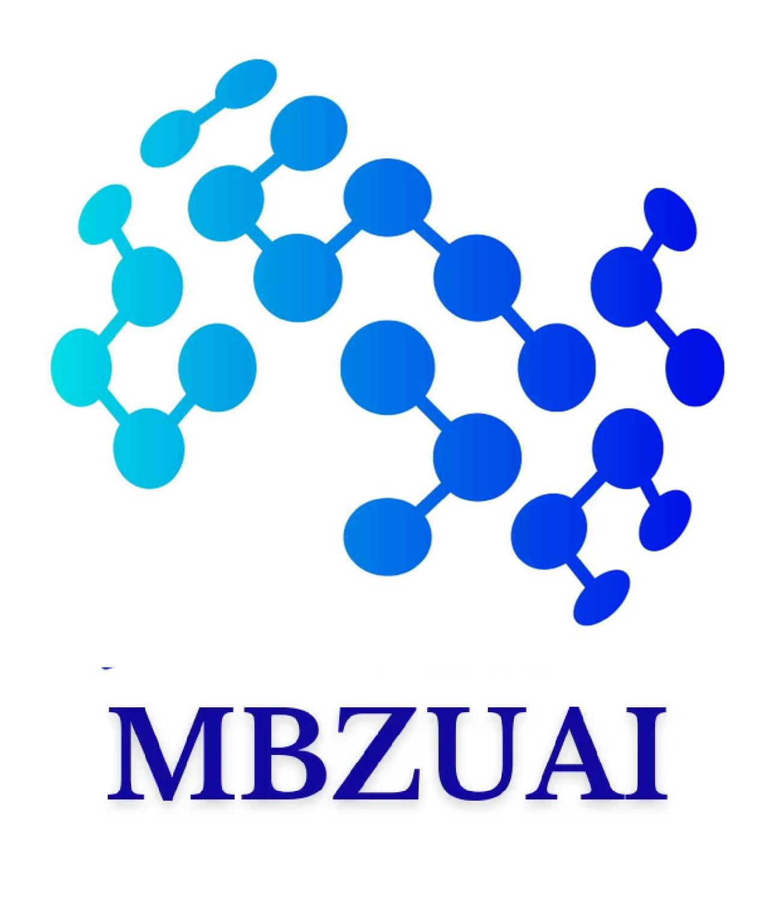
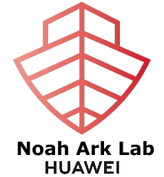

Awais Rauf

iawaisrauf at gmail dot com
I am a postdoc research associate at DERI, Queen Mary University of London, and an R&D Advisor at BetterData, helping them develop tabular foundational models. I have been affiliated with,


My research focuses on robust intelligent systems, cross-domain model adaptation, multi-modal foundational models, and the broader applications of AI with societal impact. I have published my research in leading AI and computer vision venues, such as NeurIPS (#1 in AI), ICCV (#2 in CV), ECCV (#3 in CV), TPAMI (IF=20.8), TNNLS (IF=10.4).
Additionally, I have won a national-level ml competition, received a travel grant to attend AustMS, and secured NVIDIA’s GPU grant for research.
I enjoy 📖 reading, 🏛 traveling, 🧑💻 coding and 👷🏼♂️ building stuff.
Updates
| 2025: | I am hosting Dr. Uzair Javaid, CEO of Betterdata, for an insightful session at QMUL. |
|---|---|
| 2025: | Five papers have been accepted at TPAMI(IF>24), WACV, COLING, and ISBI. Congratulations to the co-authors. |
| 2024: | Four papers accepted at ECCV, MICCAI, ICASSP and SIVP. Congratulations to the co-authors. |
| 2023: | Successfully defended my Ph.D. thesis! Honored to receive the Outstanding Achievement Award and 2.5M KRW. |
| 2022: | One paper got accepted at the Neural Information Processing Systems - NeurIPS, 2022. |
| 2022: | Got travel funding to attend AustMS Workshop on Bridging Maths and Computer Science. |
| 2021: | Two papers got accepted at NeurIPS and ICCV. |
| 2020: | One paper got accepted in IEEE Transactions on Neural Networks and Learning Systems - TNNLS. |
| 2018: | Won Election Prediction Contest held by Ignite, Red Buffer, DeepLinks and Code for Pakistan, (page). |
| 2017: | NVIDIA has accepted our proposal for the grant of Titan-X GPU to support research. |